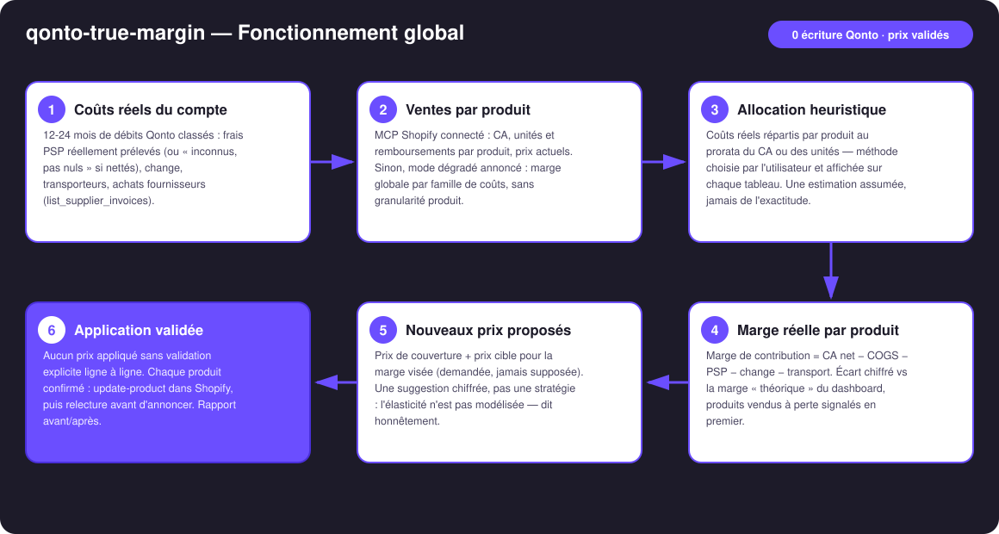
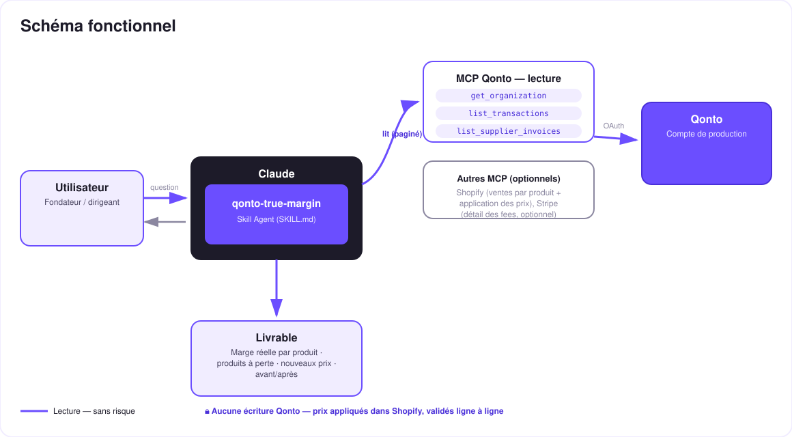

Le pricing par les coûts bancaires réels — la marge du dashboard est une fiction, ton compte connaît la vraie.
Le dashboard e-commerce affiche une « marge » construite sur des coûts théoriques. Ce qui sort vraiment du compte — frais PSP réellement débités, change, transport facturé, achats fournisseurs — raconte une autre histoire. Le skill reconstruit la vérité, puis la transforme en décision de prix :
Frais PSP constatés (ou « inconnus, pas nuls » quand ils sont nettés dans les payouts), change, transporteurs, COGS fournisseurs — tags 🟢 observé · 🟡 dérivé · ⚪ inconnu.
Ventes Shopify par produit − coûts réels alloués au prorata (CA ou unités) — la méthode est affichée sur chaque tableau.
Triés en premier, avec l'écart chiffré entre la marge « théorique » du dashboard et la marge réelle.
Prix de couverture + prix cible ; appliqués dans Shopify (update-product) uniquement après validation explicite ligne à ligne.
| Prérequis | Détail | Obligatoire |
|---|---|---|
| Compte Qonto production | Le skill s'adapte à toute organisation — get_organization d'abord, zéro donnée en dur | ✅ |
| Pays | Universel — identique pour tous les pays Qonto (FR, DE, ES, IT, AT, NL, BE, PT) ; multi-devises rapporté par devise, jamais converti en silence | ℹ️ détecté |
| MCP Qonto connecté | Connecteur officiel (claude.ai / Claude Desktop), login OAuth | ✅ |
| MCP Shopify connecté | Ventes par produit + application des prix. Sans lui : mode dégradé annoncé — marge globale par famille de coûts, sans granularité produit | ⭕ recommandé |
| MCP Stripe connecté | Détail des fees par paiement | ⭕ optionnel |
| Historique ≥ 3 mois | En dessous : tags de confiance dégradés + avertissement honnête | ⭕ |

emitted_at (décalage 1-2 j vs settled_at) · remboursements déduits du CA net · débits en devise → coût de change réel isolé
Côté Qonto : 100 % lecture. Aucun outil d'écriture bancaire n'existe dans ce skill — rien ne peut bouger sur le compte. L'unique écriture est côté Shopify (mise à jour de prix) : chaque produit exige une validation explicite dans la conversation, un « applique tout » global est refusé, et le prix est relu après application avant d'être annoncé.
| Famille | Source | Piège géré |
|---|---|---|
| Frais PSP | Débits de fees séparés (Stripe billing, PayPal…) ; sinon brut vs net via Shopify | Shopify Payments nette ses fees dans le payout → « inconnu, pas nul » sans Shopify |
| Change (FX) | Débits dont la devise locale ≠ devise du compte (local_amount/local_currency) + lignes de frais explicites | Coût de conversion réel isolé, jamais estimé depuis un taux public |
| Transport | Tiers transporteurs (Colissimo, Chronopost, Mondial Relay, DHL, UPS, Sendcloud…) | Paiements carte rapprochés par emitted_at (1-2 j de décalage) |
| COGS fournisseurs | list_supplier_invoices + prélèvements fournisseurs récurrents | Facture → produit rattachée en direct quand nommée, sinon allocation prorata |
| Coûts fixes | Tout le reste (loyer, SaaS, salaires) | Exclus de la marge de contribution, listés à part — dit clairement |
qonto-shopify-bridge| qonto-shopify-bridge | qonto-true-margin | |
|---|---|---|
| Nature | Constat comptable du passé | Décision de prix pour l'avenir |
| Question | « Shopify m'a-t-il vraiment payé ? » | « Ce produit me rapporte-t-il vraiment ? » |
| Cœur | Rapproche payouts ↔ banque, constate les fees effectifs | Consomme ces coûts constatés → marge réelle par produit → nouveaux prix |
| Écriture | Aucune (100 % lecture) | Aucune côté Qonto ; prix Shopify sur validation ligne à ligne |
Input partagé, output opposé : lance le bridge quand un payout cloche ; lance true-margin quand un prix doit changer. Les deux skills se référencent.
| Produit | Prix | Marge dashboard | Marge réelle | Verdict |
|---|---|---|---|---|
| Mug émaillé | 24,90 € | 38 % | −4 % | 🔴 vendu à perte (transport réel) |
| Tote bag | 19,90 € | 45 % | 22 % | 🟠 fees + change sous-estimés |
| Poster A2 | 34,90 € | 42 % | 11 % | 🟠 prix recommandé : 39,90 € |
Tous les chiffres de ce tableau sont inventés pour l'exemple — le skill n'affiche que ceux calculés sur le compte de l'utilisateur, méthode d'allocation en légende.
| Sortie | Format | Quand |
|---|---|---|
| Réponse dans la conversation | Tableaux markdown (familles de coûts, marges par produit, propositions, avant/après) | Toujours — c'est la base |
| Dashboard interactif | Fichier/artifact HTML : cascade marge dashboard → réelle, produits à perte, simulateur de prix | Si l'hôte affiche les fichiers (artifacts claude.ai, Claude Desktop, Claude Code) ; repli automatique sur les tableaux sinon |
| Confirmation Shopify | Relecture get-product après chaque update-product | À chaque application validée |
La démo ≤ 3 min jointe à la PR suit le storyboard : la marge dashboard qui ment → les coûts réels lus dans les débits → la révélation (le best-seller à 42 % affichés… 11 % réels, chiffres de démo inventés) → le nouveau prix validé ligne à ligne et appliqué dans Shopify → le dashboard final. Le script détaillé de tournage est conservé en interne (hors dépôt).
| Idée | Effort | Note |
|---|---|---|
| Allocation transport au poids/commande (données Shopify) | Moyen | Remplace le prorata pour la famille transport |
| Détail des fees par charge via le MCP Stripe | Faible | Déjà prévu en optionnel — précision du 🟡 vers le 🟢 |
| Suivi mensuel de la dérive de marge réelle | Faible | Alerte quand un produit passe sous son seuil |
| Scénarios de prix comparés (2-3 hypothèses de marge cible) | Faible | Dans le simulateur HTML |